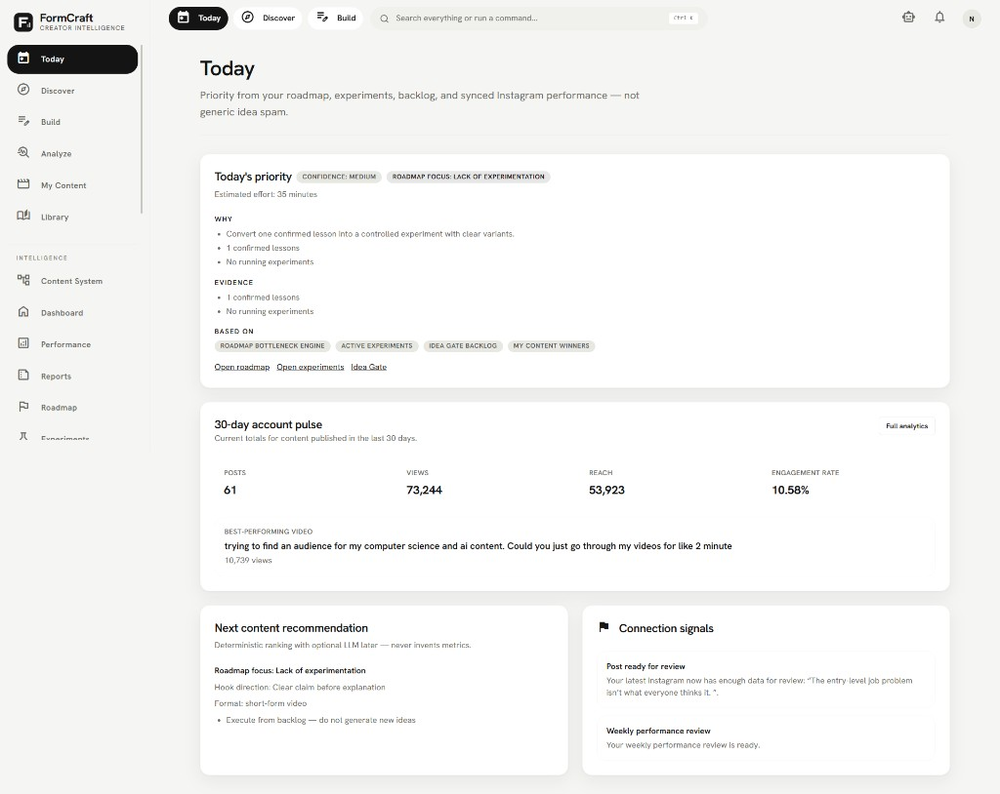
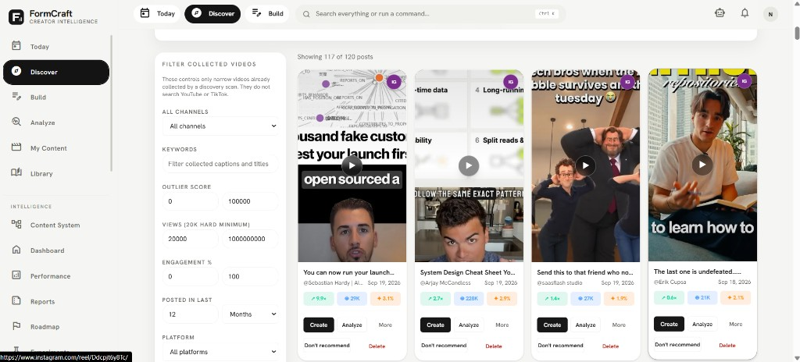
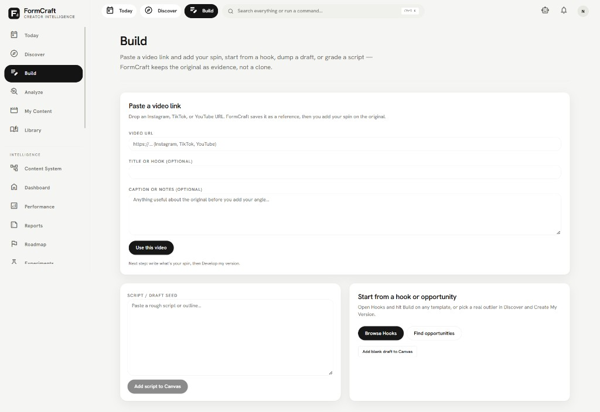
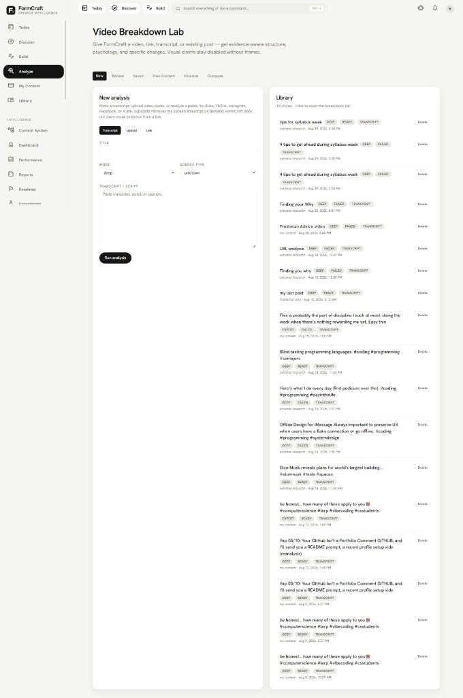
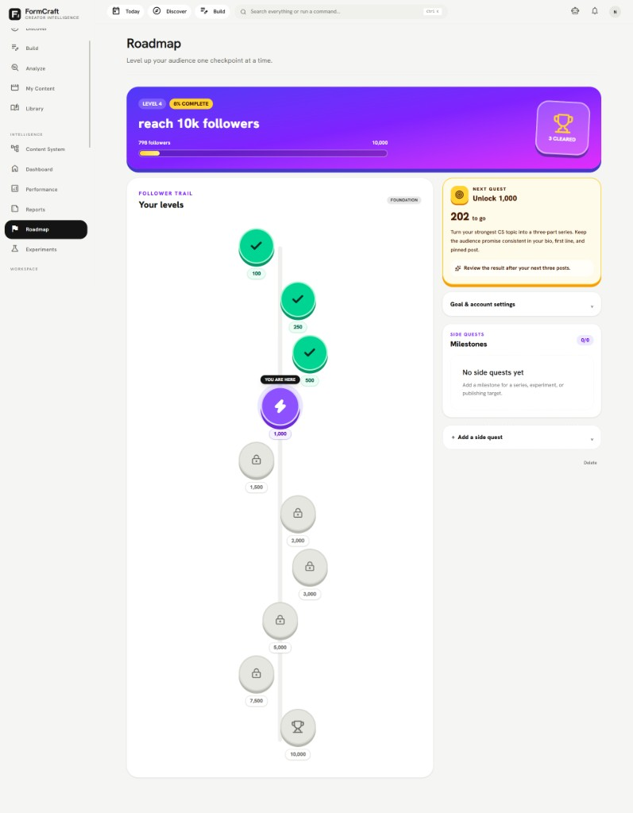

Summary
FormCraft connects with Instagram, TikTok, and YouTube to identify outlier content, organize creator watchlists, monitor account growth, and generate personalized scripts and recommendations using AI. The platform includes automated social analytics, transcript-based video breakdowns, a personalized discovery feed, content reports, performance dashboards, and a gamified follower roadmap with live progress checkpoints. I built it for my own creator workflow — access is solo right now.
My role and contribution
I am the sole builder and user. I own the product direction and repository. Development is AI-assisted under my guidance (planning, scaffolding, and iteration). I define the workflows, integrate platform APIs, and verify the protected app shell by hand as features land.
Status
Live at form-craft-phi.vercel.app for my personal use only — not opened to other users yet. Surfaces include Today priorities, Discover (outlier feed), Build (script/draft from video links), Analyze (Video Breakdown Lab), and a gamified follower Roadmap.
Technology
Next.js, TypeScript, Supabase, Meta Graph API, TikTok API, YouTube Data API, OpenRouter, Tailwind CSS, and Vercel.
Problem
Creators often guess what will perform instead of studying what already works. FormCraft turns research, transcript analysis, and account performance into a single workflow so ideas are grounded in evidence before writing starts.
User workflow
- Open Today for roadmap-aware priorities and account pulse.
- Discover outlier short-form posts across Instagram, TikTok, and YouTube.
- Build original drafts from a video link, hook, or script seed.
- Run transcript or link analysis in the Video Breakdown Lab.
- Track follower checkpoints on the Roadmap.
What I personally built
- Product direction for the full content-intelligence workflow.
- Guided AI-assisted implementation of Today, Discover, Build, Analyze, and Roadmap.
- Integration planning for Meta, TikTok, YouTube, and OpenRouter.
- Solo verification against my own connected accounts and content.
Architecture or data flow
Next.js app with Supabase auth and data → social platform APIs for content and growth signals → OpenRouter for AI analysis and script generation → dashboards and reports in the authenticated UI.
Screenshots
{kind=link}

{kind=link}

{kind=link}

{kind=link}

{kind=link}

AI-assisted development
Built with substantial AI assistance under my direction. I set requirements, review and test flows, and keep iterating on the core paths listed above.
Known limitations
- Personal tool for my account only — not a multi-user or public product yet.
- Still iterating; not every planned surface is finished.
- Production behaviour of each social API path is verified against my own setup, not a broader user base.
Next improvements
Keep hardening discovery, analyze, and script-generation flows for my own publishing cadence; decide later whether to open access beyond solo use.
Demo, repository, screenshots, and tests
- Live: form-craft-phi.vercel.app (personal access)
- Repository: github.com/danekweaga/FormCraft
- Screenshots: Today, Discover, Build, Analyze, and Roadmap above